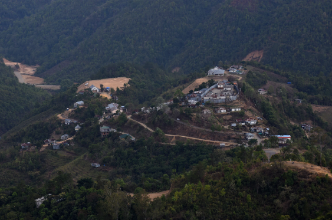

Durtlang Hills
Durtlang Hills, situated near Aizawl in Mizoram, offer panoramic views of the surrounding valleys and lush green landscapes. Visitors can enjoy hiking and trekking trails amidst the serene natural beauty of the hills
months:The best time to visit is during the winter months from November to February when the weather is cooler and more conducive to outdoor activities.Durtlang is notable for being the location of the Mizoram University campus, one of the prominent educational institutions in the state. The presence of the university brings a significant academic and cultural influence to the area.
Additionally, Durtlang is known for its residential neighborhoods, markets, and various amenities catering to the local population and students from the university. It offers a mix of urban conveniences and natural beauty, making it an attractive place to live and visit within Aizawl.
Champhai

Champhai, located in Mizoram, is a picturesque town known for its scenic beauty, vibrant culture, and traditional Mizo way of life. Visitors can explore attractions such as Rih Dil Lake, Murlen National Park, and Thasiama Seno Neihna, a beautiful natural forest.
months: National Park, and Thasiama Seno Neihna, a beautiful natural forest. The best time to visit Champhai is during the winter months from November to February when the weather is pleasant, making it ideal for sightseeing and outdoor activities.One of the main attractions in Champhai is the Rih Dil Lake, located near the village of Rih. It is believed to be the largest natural lake in Mizoram and is surrounded by legends and folklore. The lake holds religious significance for the local communities, and it is considered a sacred site.
Champhai is also known for its vibrant cultural heritage, with the majority of its population belonging to various ethnic tribes such as the Mizo, Hmar, and Lai. Visitors to Champhai can experience the rich cultural traditions of the region through music, dance, festivals, and traditional cuisine.
Dampa Wildlife Sanctuary
Dampa Wildlife Sanctuary, located in Mizoram, is a biodiverse region home to a variety of flora and fauna, including endangered species like the hoolock gibbon and the clouded leopard. Visitors can explore the sanctuary's lush forests, rivers, and waterfalls while enjoying activities such as trekking and birdwatching.
months:The best time to visit Dampa Wildlife Sanctuary is during the winter months from November to February when the weather is cool and dry, making it ideal for wildlife sightings and outdoor adventures.Dampa Wildlife Sanctuary is home to a wide variety of plant and animal species, including several endangered and endemic species. The sanctuary is particularly known for its population of tigers, elephants, leopards, and hoolock gibbons, as well as a diverse array of bird species. It also supports a rich diversity of flora, including numerous species of trees, orchids, and medicinal plants.
The sanctuary is managed by the Mizoram Forest Department and is open to visitors for eco-tourism and wildlife viewing. Visitors to Dampa Wildlife Sanctuary can explore the area through guided nature walks, trekking trails, and safari drives, offering opportunities to observe wildlife in their natural habitat and appreciate the pristine beauty of the forest landscape.